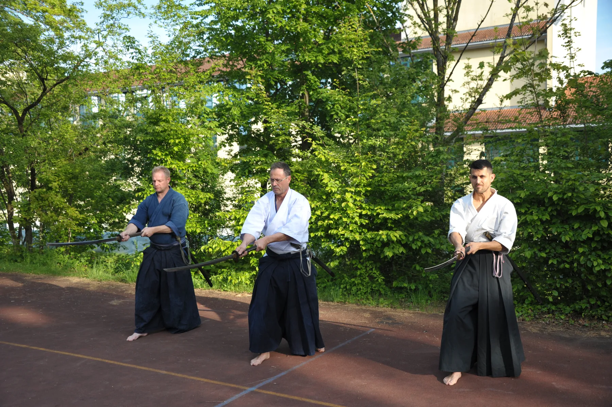
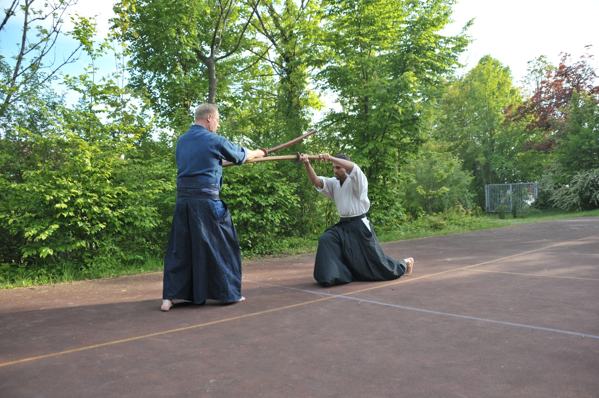
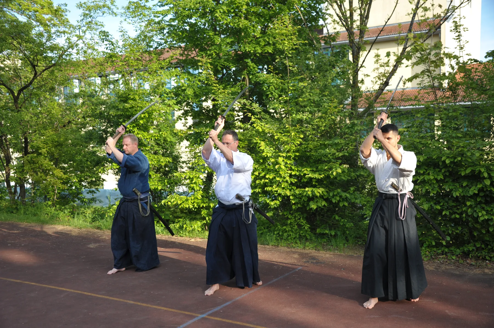

Takamura ha Shindō Yōshin Ryū

Shindō Yōshin Ryū
Integrierte Kampfkunst
Shindō Yōshin Ryū wurde von Katsunosuke Matsuoka (1836-1898) entwickelt und 1864 gegründet. Shindō Yōshin Ryū ist ein sōgō bujutsu, also eine integrierte Kampfkunst, die die Lehren verschiedener Schulen verbindet.
Die Kampfkunst legt Wert auf ausgeklügelte Körpermechanik und natürliche Bewegung.
Sie verbindet Lehren der Schulen Tenjin Shinyō Ryū, Totsuka Yōshin Ryū, Jikishinkage Ryū, Hokushin Ittō Ryū und Hozion Ryū.


Technik und Einfluss
Körpermechanik und Waffenbezug
Obwohl Shindō Yōshin Ryū eine Kombination aus Jūjutsu-Lehren widerspiegelt, zeigt seine Technik eine sanftere, stärker von Waffen beeinflusste Ausführung. Neben der Schwertkunst umfasst der Takamura-Zweig weitere Einflüsse klassischer Schulen.
Shindō Yōshin Ryū war maßgeblich an der Begründung eines der bekanntesten Karatestile Japans beteiligt: Wadō Ryū. Ōtsuka Hironori Sensei studierte Shindō Yōshin Ryū unter Tatsusaburō Nakayama.
Die Jūjutsu-Lehren stammen aus Tenjin Shinyō Ryū und Totsuka Yōshin Ryū, die Schwertkunst aus Jikishinkage Ryū und Hokushin Ittō Ryū. Im Takamura-Zweig kommen Einflüsse von Akiyama Yōshin Ryū und Matsuzaki Shinkage-Ryū Hyōhō hinzu. Tatsusaburō Nakayama war Hauptlehrer des Genbukan Dōjō in Shimotsuma und Sportlehrer an der dortigen Middle School.
Linie
Takamura ha Shindō Yōshin Ryū
Im Shindō Yōshin Ryū gibt es weltweit nur noch eine Familienlinie, die Shindō Yōshin Ryū allumfassend nach dem Lehrplan der japanischen Kriegerklasse der Samurai lehrt. Diese Linie heißt Takamura ha Shindō Yōshin Ryū und wurde von Yukiyoshi Takamura (1928-2000) gegründet.
Tobin E. Threadgill leitet nach Takamura Senseis Tod seit 2003 die Takamura ha Shindō Yōshin Ryū und lehrt die Kampfkunst weltweit. Es gibt Dōjōs in den USA, Kanada, Neuseeland, Australien, Deutschland, Portugal, Spanien, Frankreich, Finnland, den Niederlanden und Italien.
Training und Einstieg
Shoden, Chuden, Joden
Im Takamura ha Shindō Yōshin Ryū gibt es drei Lehrplanstufen: Shoden, Chuden und Joden. Zu jeder Stufe kann die dazugehörige Lehrlizenz erworben werden.
Das Training verbindet Taijutsu, Techniken ohne Waffen, mit Kenjutsu, der Kampfkunst mit dem japanischen Schwert, und Tantōjutsu, dem Training mit dem japanischen Dolch. Wegen des umfangreichen Lehrinhalts richtet sich das Angebot hauptsächlich an Erwachsene. Ein Angebot für Jugendliche ab 17 Jahren ist nach Reife und Fähigkeit in Absprache mit dem Dōjōleiter möglich.
Quelle: eigene deutsche Übersetzung aus der offiziellen Seite der Takamura ha Shindō Yōshin Ryū.